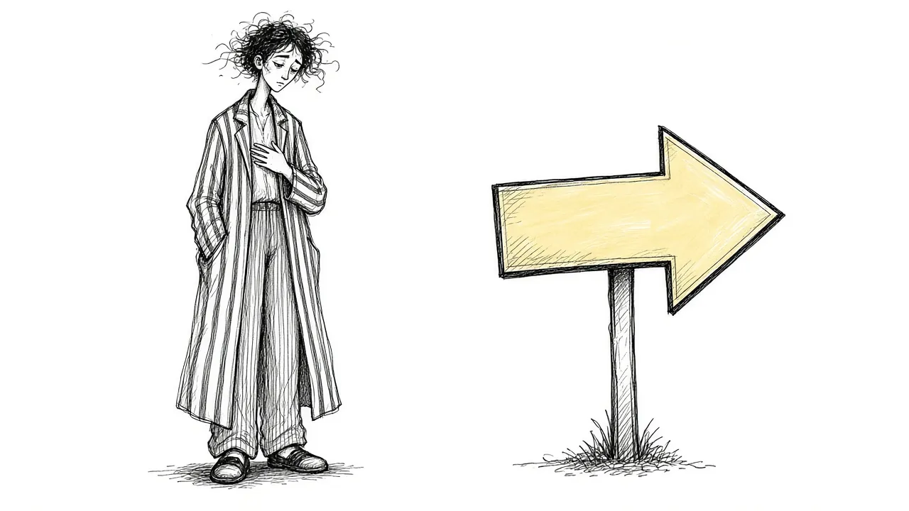

Why "Just Move On" Doesn't Work

At some point, almost every grieving person hears some version of it. "You need to move on." "It is time to let go." "They would not want you to be sad." Sometimes it comes from friends. Sometimes from family. Sometimes it comes from inside your own head.
The intention behind these words is usually kind. People want you to feel better. They want the pain to end. But "just move on" rarely works, and for many people it makes grief heavier. This guide explains why, and what tends to help instead.
Why people say it
Before looking at why the advice falls short, it is worth understanding where it comes from.
- Discomfort with pain. Watching someone grieve is hard. Encouraging them to move on can be a way of easing the observer's discomfort as much as the griever's.
- Older ideas about grief. For a long time, popular advice suggested that healthy grief meant detaching from the person who died. That idea still lingers.
- A wish to fix things. Many people feel helpless around grief. Giving advice feels like doing something.
- Cultural pressure to be productive. Work, school, and daily life often expect people to bounce back quickly.
None of this makes the advice correct. It just helps explain why you keep hearing it.
Why "just move on" does not work
Grief is not a choice
You cannot decide to stop grieving any more than you can decide to stop loving someone. Grief is not a behavior you can switch off. It is a response that unfolds over time as your mind and body adjust to loss.
Pushing grief away tends to backfire
When people try to force themselves past grief, they often end up suppressing it. Suppressed feelings do not disappear. They tend to come back later, sometimes stronger, sometimes as physical symptoms, sometimes as numbness or irritability that seems to come from nowhere.
It implies the relationship has to end
Moving on can sound like leaving the person behind. For many grieving people, that feels like a betrayal. Research on continuing bonds suggests that staying connected to the person who died is common and often healthy. See Continuing Bonds for more.
It adds shame
If you are told to move on and you cannot, it is easy to conclude that something is wrong with you. That shame can make people hide their grief, which often leaves them lonelier.
You do not need to move on from the people you love. You need to find a way to move forward while carrying them.
Moving forward instead of moving on
Many grieving people find it helpful to replace "moving on" with "moving forward." The difference matters.
Moving on suggests leaving the loss behind. Moving forward suggests continuing to live, grow, and change while the loss comes with you.
Moving forward can look like:
- Returning to work or routines at your own pace
- Trying new things, while still honoring old memories
- Forming new relationships without replacing the person who died
- Finding new roles or purposes in life
- Letting grief be part of your story rather than the end of it
None of this requires you to stop grieving. It simply means grief is not the only thing in your life.
What to say when someone tells you to move on
It can be hard to know how to respond. A few options, depending on the relationship:
- If you want to explain: "I know you want me to feel better. Grief does not really work that way for me. I am finding my way through it."
- If you want to set a boundary: "I am not ready to talk about moving on. I would rather talk about them."
- If you want to ask for what helps: "What would really help is if you just listened, or shared a memory of them."
- If you do not have the energy: A simple "Thanks, I will get there in my own time" is enough.
You do not owe anyone a justification for how you grieve.
When the voice is your own
Sometimes the loudest "move on" comes from inside. You might tell yourself you should be over this by now, that you are being dramatic, that others have it worse.
If that sounds familiar, try speaking to yourself the way you would speak to a friend in your situation. Would you tell them to get over it? Probably not. You would likely say something like "Of course you are still sad. You loved them." You deserve that same kindness. Our guide on Self-Compassion in Grief has practical ways to build it.
What tends to help instead
Letting grief have space
Rather than pushing grief away, many people find relief in letting it be there. Setting aside a little time to look at photos, write, or simply feel can make the rest of the day easier.
Staying connected
Tell their stories. Say their name. Keep a ritual that matters. These things often bring comfort rather than holding you back.
Finding people who get it
Support groups, counselors, or friends who have also grieved can offer understanding that well-meaning "move on" advice cannot. See Grief Support Options for an overview.
Making small changes over time
Moving forward does not have to be dramatic. It might be rearranging one room, trying a new hobby, or making plans for the future while still keeping their memory close.
What moving forward looked like for many people
People who have grieved for a long time often describe the change not as an exit but as a widening. In the beginning, grief filled every room. Later, it lived in one room, and they could visit it on purpose. Later still, they found that some rooms held both grief and new things at the same time: a wedding where they missed their father and also danced, a holiday that ached and still had laughter in it.
That widening usually happens without anyone deciding it. It grows from small choices made over and over: answering a friend's invitation, planting something, keeping a promise to yourself to eat lunch. It is slow, and it is not a sign that the person mattered less. It is a sign that your life is making space for both.
When grief does seem stuck
Sometimes grief stays intense and disabling for a long time, and daily life becomes very hard. That is not the same as failing to move on. It may mean that you could use more support. A grief counselor or therapist can help you understand what is happening and find ways forward.
If you are having thoughts of ending your life, or of joining the person who died, please reach out right away. Call or text 988 to reach the Suicide and Crisis Lifeline. You do not need to be in immediate danger to call.
You can carry them with you
You do not need to choose between grieving and living. Many people find that, over time, their grief changes shape. It becomes less sharp, more woven into their lives, and sometimes even a source of strength. The person they lost stays with them, not as a weight they are failing to put down, but as part of who they are.
So if anyone, including you, says it is time to move on, it is okay to answer gently that you are moving forward instead. And that the person you love is coming with you.
This article is for general information and support. It is not medical or mental health advice. If grief has become unbearable or you are thinking about harming yourself, call or text 988 right now.
Related reading

Grief Alongside Depression and Anxiety
Grief often arrives alongside other mental health challenges. How to recognize overlap and get support for all of it.

Why Your Brain Keeps Replaying Their Last Days
Memories of the final days or moments can loop relentlessly. Here is why that happens and how to let the rest of their life back in.

Rumination in Grief: Getting Off the "What If" Wheel
Endless what-ifs and if-onlys can trap grieving people. Learn why rumination happens and gentle ways to step off the wheel.